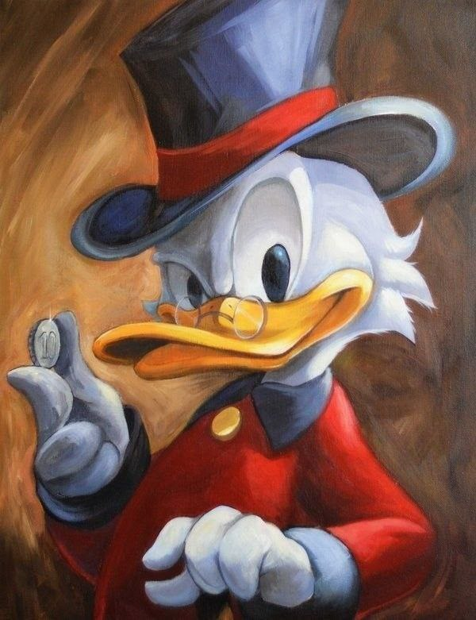
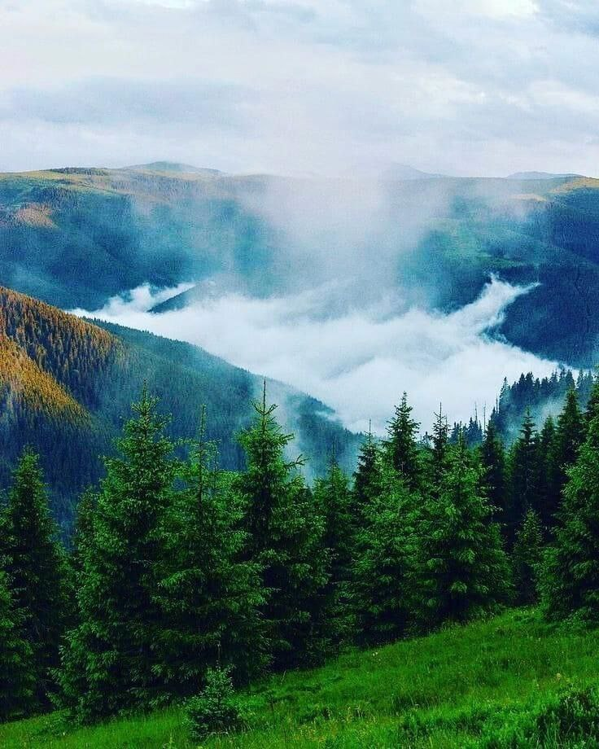

Про мене
Жив собі хлопець на ім'я Микола. Він був працьовитий та мріяв про велику подорож навколо світу. Щодня він збирав гроші, працюючи на фермі у селі. І одного дня, коли зібрав достатньо коштів, він вирішив здійснити свою мрію. Вирушивши зі своєї домівки, Микола побачив безліч чудових місць і познайомився з цікавими людьми. Під час подорожі він навчився багато нового і зрозумів, що найважливіше - це друзі і спогади, які зберігаються на все життя.
Про подорож
Повернувшись з подорожі, Микола був наповненй незабутніми враженнями. Він відчував, що кожен крок, кожна зустріч, кожен краєвид залишив свій слід у його душі. Подорож допомогла йому побачити світ з іншого ракурсу, розширила його світогляд та вдосконалила навички спілкування. Микола відчував величезну вдячність за можливість побачити так багато дивовижних місць та зустріти цікавих людей. Тепер, зібравшись з думками і враженнями, він знову повернувся до свого села, але серце його завжди буде десь там, далеко, де він відчував себе часткою цього великого світу.
Висновок
Після завершення подорожі Микола зрозумів, що вона була не лише пригодою, але й важливим етапом у його особистому розвитку. Він переконався, що найцінніші скарби - це спогади та досвід, які він здобув під час цієї подорожі. Тепер Микола бачив світ з нової перспективи, готовий до нових викликів і пригод, які чекають на нього у майбутньому.